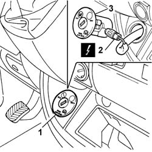

5580C26 PASSENGER AIR BAG SWITCH - R R
- Path
- Procedures > 55 ELECTRICAL EQUIPMENT > 5580 SPECIAL ACCESSORIES > 5580C AIR BAG SYSTEM > 5580C26 PASSENGER AIR BAG SWITCH - R R
- Kind
- repair procedure (removal / refitting; the operation number is the code)
- Applies to
- all engines; all production periods
- Interactive page
- https://sloeber94.github.io/elrnDB-fDct/en/#/244001407
Applies to: all engines; all production periods
 Removing
Removing
 Refitting
Refitting- Before removing and refitting the passenger Air Bag module disabling switch, the following preliminary operations must be carried out: (1) turn the ignition key to the OFF position and extract it; (2) wait for 2 minutes before continuing; (3) remove the battery housing cover, disconnect the negative battery terminal and insulate the leads; (4) wait for 5 minutes before continuing.
1. Release the switch and move it aside.
2. Disconnect the electrical connection.
3. Remove the switch
 | Description | Connector |
|---|---|---|
2 | Passenger Air Bag disabling switch | H075 |

Applies to: all engines; all production periods
Refitting
Removing- Connect the electrical connection.
| Description | Connector |
|---|---|---|
. | Passenger Air Bag disabling switch | H075 |
- Fit the passenger Air Bag disabling switch in the housing.
- Connect the negative battery terminal.
Op. 5530B56 BATTERY DRIP TRAY COVER - R.R.
- Check the operation of the system using the Examiner or other diagnostic equipment.